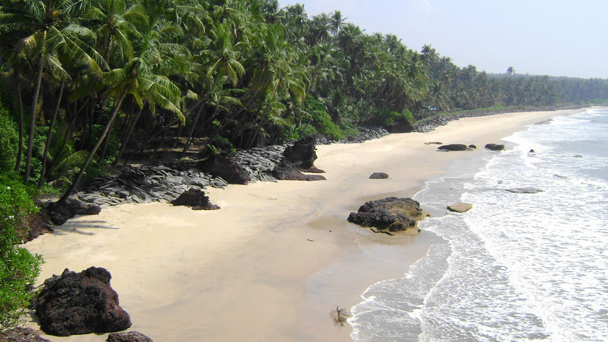

ALLEPPEY

Alappuzha (or Alleppey) is a city on the Laccadive Sea in the southern Indian state of Kerala. It's best known for houseboat cruises along the rustic Kerala backwaters, a network of tranquil canals and lagoons. Alappuzha Beach is the site of the 19th-century Alappuzha Lighthouse. The city's Mullakkal Temple features a traditional design. Punnamada Lake's snake boat races are a well-known annual event.
BEKAL

Bekal is a small town in the Kasaragod district on the West coast of the state of Kerala, India. Kasaragod is a town located at the Northern extreme of Kerala 16 km south of the town on the National Highway and is the largest and best preserved fort in the whole of Kerala, bordered by beach.
COCHIN(KOCHI)

Kochi (also known as Cochin) is a city in southwest India's coastal Kerala state. It has been a port since 1341, when a flood carved out its harbor and opened it to Arab, Chinese and European merchants. Sites reflecting those influences include Fort Kochi, a settlement with tiled colonial bungalows and diverse houses of worship. Cantilevered Chinese fishing nets, typical of Kochi, have been in use for centuries.
KASARAGOD

Kasaragod, formerly Casrod, is a municipal town and administrative headquarters of Kasaragod district in the state of Kerala, India. Established in the year 1966, Kasaragod was the first municipal town in the district. It is the northernmost district of Kerala and is also known as Saptha Bhasha Sangama Bhoomi.
KIZHUNNA BEACH
Kasaragod, formerly Casrod, is a municipal town and administrative headquarters of Kasaragod district in the state of Kerala, India. Established in the year 1966, Kasaragod was the first municipal town in the district. It is the northernmost district of Kerala and is also known as Saptha Bhasha Sangama Bhoomi.
KOVALAM

Kovalam is a small coastal town in the southern Indian state of Kerala, south of Thiruvananthapuram. At the southern end of Lighthouse Beach is a striped lighthouse with a viewing platform. Palm-backed beaches also include Hawa Beach and Samudra Beach. Heading south, Vizhinjam Juma Masjid mosque overlooks the busy fishing harbor. Inland, Sagarika Marine Research Aquarium displays technology used in pearl production.
MUNNAR

Munnar is a town in the Western Ghats mountain range in India’s Kerala state. A hill station and former resort for the British Raj elite, it's surrounded by rolling hills dotted with tea plantations established in the late 19th century. Eravikulam National Park, a habitat for the endangered mountain goat Nilgiri tahr, is home to the Lakkam Waterfalls, hiking trails and 2,695m-tall Anamudi Peak.